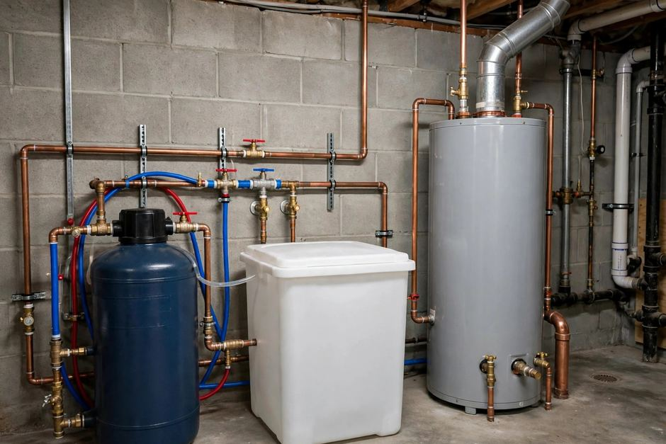
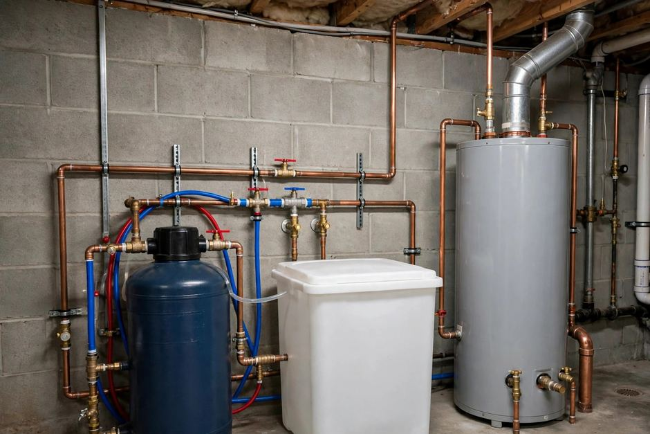

Softening Options
Water Softener Installation in Belleville, IL
A water softener addresses dissolved minerals that leave scale on fixtures, in appliances, and inside water heaters. Softening is distinct from filtration, because filtration targets taste and sediment while softening targets mineral content. Hinkle Plumbing Company discusses salt-based and no-salt options in Belleville, IL, with water filtration kept as a separate discussion.
1610 W Main St, Belleville, IL 62220Monday through Friday, 8:00 AM to 4:30 PM(618) 677-6556
What This Service Covers
Water Softener Scope in Belleville
Softener scope covers system selection, installation location, drain and power context, and maintenance discussion for homes in Belleville, IL. Each option below serves a different purpose, and selection reflects mineral observations and household priorities.
Salt-Based Ion Exchange
Salt-based ion exchange removes dissolved minerals through resin that exchanges mineral ions for sodium ions. System sizing context, regeneration needs, and salt handling are discussed in general terms, and tap testing shapes the conversation.
No-Salt Conditioners
No-salt conditioners alter mineral behavior without removing minerals, and they do not produce soft water. The distinction is explained plainly during planning, so expectations for scale, soap use, and fixture spotting stay realistic.
Scale Observation Review
Scale on fixtures, in kettles, and at showerheads is reviewed as part of the mineral discussion. Scale patterns help shape softening conversations, while tap testing and utility report review provide address-specific context.
Installation Location Review
Installation location covers entry piping, drain access, power context, and maintenance space. Location findings shape system selection and piping layout, and bypass piping context is reviewed during planning.
Water Heater Context
Mineral buildup inside water heaters is discussed as part of softening planning, because scale affects heating surfaces over time. Heater age and condition context are reviewed alongside softener selection where relevant.
Maintenance Discussion
Maintenance discussion covers salt handling, resin context, and system checks in general terms. Maintenance needs vary by system type and water use, and ongoing care is discussed before installation scope is set.
About Hinkle Plumbing Company
Softener Planning From a Belleville Base
Hinkle Plumbing Company is based in Belleville, IL, and discusses water softener options for homes in Belleville. Tap testing with utility report review shapes each discussion, without reliance on a citywide average.
Published mineral estimates for Belleville water conflict across third-party sources, and address-specific findings provide the honest context. The honest step for a household is a tap test or review of the utility water quality report for the address, rather than reliance on a citywide average. Hinkle Plumbing Company discusses findings in those terms, and water heater installation context is considered where heater scale is part of the pattern.

How we workImage showing a water softener unit installed near entry piping in a Belleville home.
How Selection Works
Softener Selection Steps
The steps flex with the condition of the job, but the sequence stays the same.
Discuss Mineral Signs
Scale, spotting, soap behavior, and appliance observations are discussed to understand mineral concerns. Sign details help separate softening needs from filtration needs, because each system addresses a different water concern.
Review Tap and Report
Tap testing and utility water quality report review are discussed as address-specific steps. Findings from those sources shape the softening conversation, and no citywide average is used as a sizing basis.
Check Installation Space
Entry piping, drain access, power context, and floor space are checked for the proposed location. Space findings shape system selection, and maintenance access is kept in mind from the start.
Compare System Types
Salt-based ion exchange and no-salt conditioning are compared on purpose and outcome. The comparison keeps the soft-water distinction clear, so selection reflects household priorities rather than a misunderstood label.
Install and Review
After installation, connections, drain function, and flow at fixtures are checked. Maintenance context is discussed, and household members are shown how salt handling and system checks fit into ongoing care.
System Types
Softening Methods Compared
Softening methods differ in mineral removal, maintenance, and outcome. The comparison below keeps each method distinct, so selection reflects the household priority and the findings from tap and report review.
Ion Exchange Process
Ion exchange passes water through resin that removes dissolved minerals and is periodically regenerated. Regeneration context, salt use, and drain needs are discussed in general terms, and system sizing context reflects household water use.
Conditioner Process
Conditioning changes how minerals behave without removing them from the water. Scale behavior may shift, but water leaving a conditioner is not soft water, and the distinction is stated plainly during planning.
Whole-House Softening
Whole-house softening treats water at entry so every fixture receives softened water. Piping layout, bypass context, and outdoor tap context are reviewed, and placement reflects household priorities and maintenance access.
Targeted Softening Discussion
Targeted discussion considers which fixtures and appliances matter most for mineral concerns. Coverage choices reflect household priorities, and filtration remains separate where taste and sediment concerns also exist.
Drain and Power Planning
Drain routing and power context are reviewed for regeneration and control needs. Drain access and discharge placement shape installation planning, and requirements are checked against current rules during planning.
Bypass and Maintenance Access
Bypass piping allows water use during maintenance, and access space supports salt handling and system checks. Bypass and access needs are reviewed during installation planning for the specific location.
Common Patterns
When Softener Installation Is Discussed
Softener discussions often start with scale, spotting, or soap observations in daily use. The patterns below describe common reasons for an assessment, without describing a specific property or job.

Scale on Fixtures and Showerheads
A common call describes scale buildup on faucets, showerheads, and appliance surfaces, with spotting that persists after cleaning. Assessment reviews scale patterns, household water use, and installation space, and tap testing with utility report review is discussed as the address-specific step. Salt-based and no-salt options are compared plainly, with the soft-water distinction kept clear. Observations from assessment are shared, and scope reflects the combined findings for the space.
Soap and Laundry Observations
A common call describes soap that rinses with difficulty, laundry that feels stiff, or dishes that spot after washing. Assessment reviews household observations alongside scale patterns and water use, and filtration is kept separate where taste concerns also exist. System selection reflects mineral findings and household priorities, and maintenance context is discussed before installation. Findings are reviewed together before repair scope is discussed for the home.
Signs to Note
Mineral Signs That Point to Softening Discussion
Most calls fall into a few patterns. Knowing which pattern applies decides what the visit involves.
Scale on Fixtures
Scale deposits on faucets, showerheads, and appliance surfaces suggest mineral content in the water. Scale patterns across fixtures help shape the softening discussion, and tap testing provides address-specific context. Findings shape the assessment response.
Spotting on Dishes and Glass
Spotting on dishes and glass after washing can reflect mineral residue left as water dries. Spotting patterns are reviewed alongside scale observations, and softening options are discussed in plain terms.
Soap Rinsing Difficulty
Soap that rinses with difficulty or leaves a film can reflect mineral interaction with soap. Household observations are reviewed with scale patterns, and the softening discussion reflects the combined findings.
Heater Scale Context
Mineral buildup inside a water heater can affect heating surfaces over time. Heater condition context is reviewed alongside softener selection, and heater maintenance observations are shared during planning. Observations shape the repair discussion.
Scope Factors
What Shapes Softener Installation Scope
System type, coverage, and installation space shape softener scope.
System Type
Salt-based and no-salt systems differ in components, drain needs, and maintenance context. System type findings from assessment shape the plan, and scope is discussed by phone before work is scheduled.
Coverage and Piping
Whole-house coverage, bypass piping, and outdoor tap context affect piping scope. Coverage priorities from the household shape the plan, and piping layout findings are included in the discussion. Scope is discussed before scheduling.
Space and Drain Access
Floor space, drain access, and power context affect installation effort. Space findings are reviewed during planning, and readers are invited to call to discuss scope for a specific home in Belleville.
Reviews from Google
What Customers Say on Google
★★★★★
“Very prompt and responsive, the worker was friendly and informative! Will use this company again!”
★★★★★
“Don did an outstanding job for me when I needed him and highly recommend his business”
★★★★★
“Rated 5.0 out of 5 across 3 Google reviews, all five stars.”
Does a no-salt conditioner produce soft water?
No. A no-salt conditioner changes how minerals behave without removing them, and water leaving a conditioner is not soft water. Salt-based ion exchange removes dissolved minerals through resin, and the distinction is explained plainly before system selection. Findings are reviewed together, and household observations are included in the discussion.
How is mineral content checked for a Belleville home?
Mineral content is checked through a tap test or review of the utility water quality report for the address. Published third-party mineral estimates conflict, so address-specific findings provide the honest context rather than reliance on a citywide average for softening discussion.
How is softening different from filtration?
Softening targets dissolved minerals that cause scale, while filtration targets taste, odor, chlorine, and sediment concerns. Each system has a separate purpose, and households with both concerns discuss filtration and softening as separate systems during planning. Related system findings are reviewed together, and observations shape the response.
What affects the scope of a softener installation?
System type, coverage level, piping layout, drain access, and installation space shape the scope. Each factor is reviewed during assessment, and readers are invited to call (618) 677-6556 to discuss scope for a specific home in Belleville. Findings are discussed by phone before work is scheduled.
Related services
Other Plumbing Services We Handle

Water Filtration System in Belleville, IL
Water filtration addresses taste, odor, chlorine, and sediment concerns separately from mineral softening work.Water Heater Installation in Belleville, IL
Water heater installation covers tank replacement planning, including scale context and piping access in Belleville homes.
Tankless Water Heater Services in Belleville, IL
Tankless water heater services cover conversion planning, sizing context, venting, and descaling discussion for Belleville homes.Mon–Fri 8:00 AM–4:30 PM
Discuss Water Softener Installation in Belleville
Call (618) 677-6556 during Monday through Friday, 8:00 AM to 4:30 PM to discuss water softener options in Belleville. Closed Saturday and Sunday. Tap testing and utility report review are discussed before system selection.

Talk with the local team
Request Water Softeners
Call (618) 677-6556 during office hours, Monday through Friday, 8:00 AM to 4:30 PM. Tell us what is happening and we will talk through the next step.